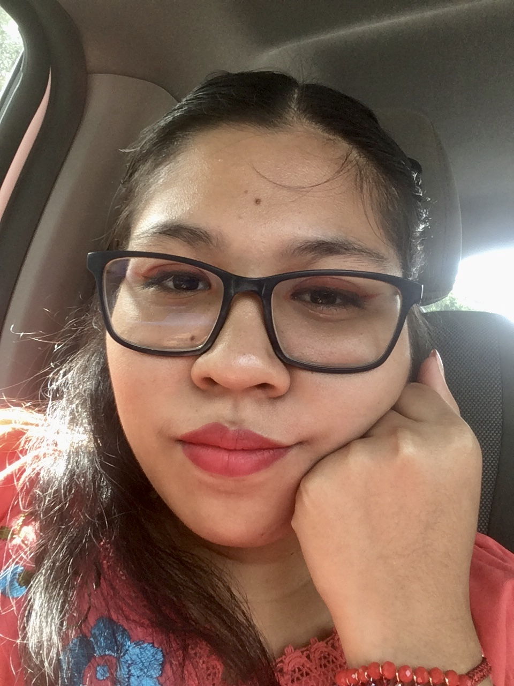
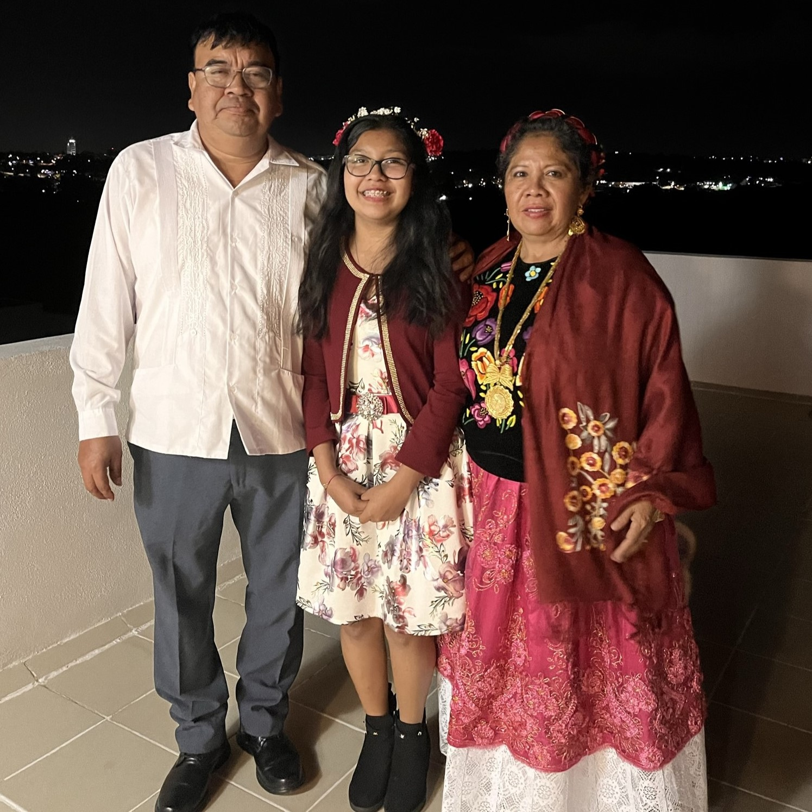
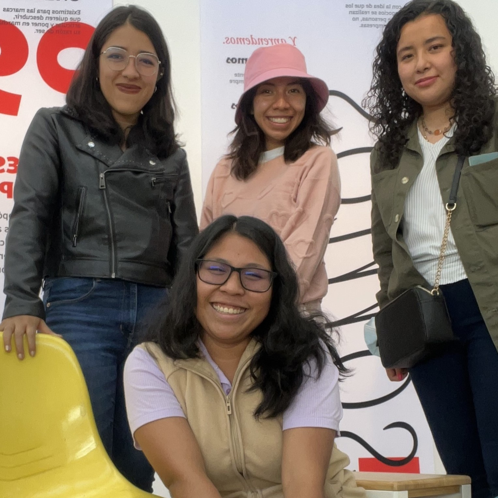

¿Quién soy yo?
¡Hola a todos, mucho gusto!
Mi nombre es Vinizza Marianna Sampé Orozco y tengo 21 años. Soy estudiante de Diseño gráfico en la Benemérita Universidad Autónoma de Puebla. Me apasiona el diseño de interfaces y la creación de diversa joyería con diferentes materiales. Me considero una persona creativa, calmada, con grandes sueños y apasionada. En mis tiempos libres me gusta crear e idear diferentes resoluciones a diversos problemas de comunicación.
Mi familia
Mi papá se llama Antonio el junto a mi mamá son mi mayor apoyo en todos los ámbitos. Mi papá siempre ha estado para cuidarme y guiarme en cada paso que doy. Además tiene un sentido del humor único que llena mi hogar con alegría. Lo admiro mucho y es un ejemplo a seguir para mi, el es un ser dedicado a lo que hace, muy responsable y perseverante. A pesar de no tener muchos gustos en común, a los dos nos encanta platicar de temas automotrices, científicos y astronómicos. Admiro su capacidad de mantener la calma en momentos difíciles, además de poder encontrar siempre el lado positivo de las cosas y su espíritu libre y soñador.
Mi mamá se llama Martha, es una mujer fuerte y decidida, el verdadero pilar de nuestra familia. Siempre ha sido un ejemplo de resiliencia, manteniéndonos unidos en los momentos más difíciles y brindándonos su apoyo incondicional. Lo que más admiro de ella es cómo lleva con orgullo nuestras raíces, transmitiéndonos el valor de nuestra cultura y tradiciones. Además, tiene un talento especial para la cocina; cada platillo que prepara es una obra de amor, lleno de sabor y dedicación. Su cocina no solo alimenta el cuerpo, sino que también nos reconforta el alma, y su pasión por compartir ese don es algo que siempre aprecio. Ella es mucho más que una madre: es amiga, hermana, esposa y consejera. Cada uno de estos roles los desempeña con el mismo amor y entrega, haciendo que todos a su alrededor se sientan comprendidos y apoyados. Su capacidad para dar y crear un hogar lleno de calidez es algo verdaderamente admirable.
Tengo 2 hermanos, pero solo tengo fotos de mi hermana menor, Mi hermana es mucho más que solo eso; es mi amiga, mi cómplice y un pilar en mi vida. Desde el día en que nació, sentí un amor inmenso por ella, y aunque hemos tenido nuestras pequeñas peleas, nunca han sido más grandes que el lazo que nos une. Crecer juntas ha sido una aventura, llena de risas, desafíos y momentos que solo nosotras entendemos. A pesar de las diferencias que a veces surgen, siempre hemos sabido que al final del día podemos contar la una con la otra. En los momentos más difíciles, su apoyo ha sido incondicional, y estoy segura de que siempre puedo acudir a ella para compartir tanto las alegrías como las preocupaciones. Nuestro vínculo es único, y cada día me siento agradecida por tenerla en mi vida, por ser no solo mi hermana, sino también una amiga que siempre está ahí.
Mi hermano mayor es una figura muy importante en mi vida, siempre ha estado presente como un ejemplo y apoyo constante. A lo largo de los años, ha sido un guía y protector, aportando sabiduría y cariño en cada paso que damos como familia. Junto con mi sobrina, forma una parte esencial de nuestro núcleo familiar, trayendo alegría y sentido de unidad. Su presencia fortalece nuestros lazos y siempre encuentro en él alguien con quien contar. Además, su amor por nuestra familia es evidente en cada acción, lo que lo convierte en una pieza clave en nuestras vidas.
Mis amistades
Brenda, Lili y Bibi han sido mis amigas desde el tercer semestre de la universidad, y nuestra amistad comenzó en las clases en línea. A pesar de la distancia física, logramos conectarnos a través de las pantallas, compartiendo experiencias, risas y largas sesiones de estudio virtual. Lo que comenzó como compañeros de clase pronto se transformó en un lazo especial que ha perdurado incluso después de que volvimos a las clases presenciales. Cada una aporta algo único: Bibi siempre está lista con una sonrisa, Lili tiene una calma que equilibra al grupo, y Brenda ilumina con su energía inagotable. A lo largo de los desafíos de la carrera, nos hemos apoyado mutuamente, y sé que esta amistad continuará creciendo.